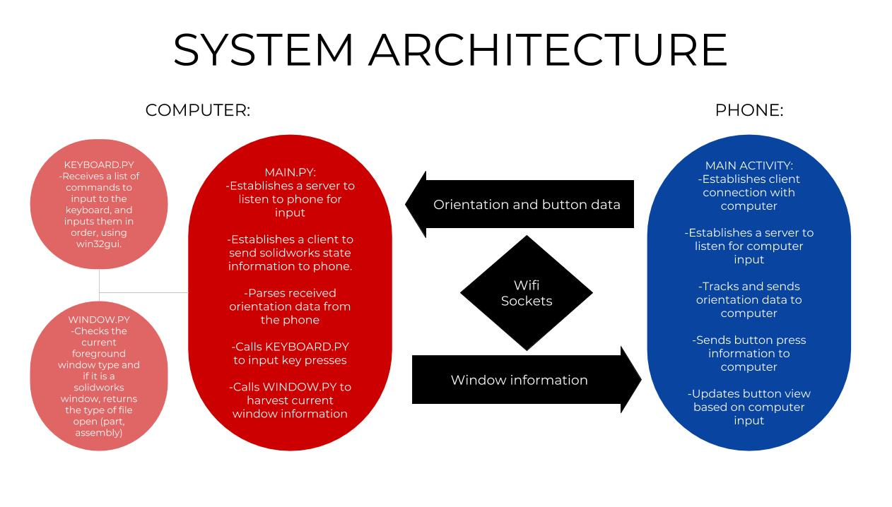

What it does
A partner and I created a mobile app that could turn a phone into a 3D mouse for Solidworks! The coolest feature of the project is the ability to interact with 3D CAD models by rotating the phone. There were two modes to this form of control. In the first mode (demonstrated in the gif above), the orientation of the CAD model on the screen matched the orientation of the phone. In the second mode, rotating around the model was toggled by tilting the phone past certain thresholds (ie: tilt the phone to the left to rotate the part to the left, hold the phone flat to keep the model stationary in the current position).
What’s more, the app also is able to detect what Solidworks activity (ex: sketch, part, or assembly) the user is in. This allows us to display relevant shortcuts on the screen of the phone that correctly activate the corresponding Solidworks action on the computer.
How it works
There is a system of two way communication over server sockets that allows that phone and the computer to communicate with each other. The phone streams orientation and gyroscope data to a python script running on the computer, as well as any button presses in the app. The script parses the orientation data, and correctly changes the orientation of the current CAD model (if applicable). Any button presses in the app also are parsed by the script and triggers the correct Solidworks actions.
In turn, the computer sends over information about the current activity in Solidworks to the app on the phone. This information allows the phone to dynamically update the shortcuts it displays to always be relevant. Below is a system architecture diagram that shows how data flows in the project.

Is it useful?
Well… kinda… As someone who is very comfortable and proficient with CADing in the ‘traditional’ sense, I wouldn’t use this. That being said, I would say that it is a decent start. The idea of a device that consolidates CAD shortcuts and has the ability to change the view of the CAD model is nothing new: see 3Dconnexion’s SpaceMouse Pro. While this project is nowhere as polished, it achieves a similar outcome at a fraction of the cost to the user.
That being said, we made this project with the intention of helping users who are newer to CAD. The phone allows the user to more intuitively interact with the model. Additionally, the shortcuts that are displayed on the phone screen can help users better understand the common actions that one would take given the activity they’re in. This is a common challenge we found with rookie CADers: because Solidworks has so many tools, it can be daunting to find the right tools, even just for simple tasks. The phone helps to consolidate all of the most common commands for the given activity in one place in order to streamline the process. We took our project and demonstrated it to engineers and product managers at Dassault, the makers of Solidworks, and they thought it had great potential, offering us the opportunity to work on the project as interns over the summer! Unfortunately, we already had other jobs, but it was cool to get that form of validation for our idea.